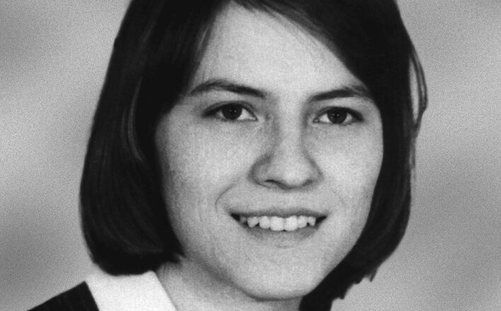

Casos Reais
-
A história da terrível possessão que deu origem ao filme O exorcismo de emily rose.
-
Anneliese Mitchel, uma devota católica nascida na Alemanha em 1952, cresceu em um ambiente profundamente religioso, onde a presença do padre da paróquia era uma constante em sua casa. No entanto, a proximidade com a fé não a protegeu dos horrores que estavam por vir.
Durante seus anos de faculdade, Anneliese começou a ser assombrada por alucinações perturbadoras, visões de demônios e seres sobrenaturais que a mergulharam em um estado de transe. Concomitantemente, sintomas físicos como convulsões e desmaios começaram a afligi-la.
Apesar dos esforços para tratar suas condições como problemas psicológicos, incluindo medicamentos e terapia, a saúde de Anneliese continuou a se deteriorar. Incapaz de prosseguir com seus estudos, ela retornou à casa de seus pais, onde sua família assumiu a responsabilidade por seu cuidado.
Contudo, a situação de Anneliese rapidamente se tornou ainda mais sombria. Sintomas bizarros, como arranhar as paredes com as unhas e comportamentos aberrantes, como comer baratas, marcaram o declínio de sua condição. Com o passar do tempo, o tratamento médico tradicional foi abandonado em favor da crença de que ela estava possuída.
Apesar da oposição do Vaticano, o caso de Anneliese foi considerado uma possessão demoníaca, e sessões de exorcismo foram realizadas na esperança de libertá-la do mal que a assolava. Gravações em áudio dessas sessões revelaram o terrível sofrimento da jovem enquanto ela enfrentava seus demônios interiores.
A luta pela alma de Anneliese se tornou uma batalha perdida, conforme os demônios consumiam tanto sua essência espiritual quanto seu corpo físico. Sua resistência foi minada por cada nova sessão de exorcismo, até que, finalmente, sucumbiu à desidratação e desnutrição.
O trágico destino de Anneliese Mitchell é um lembrete sombrio dos limites da fé e da crueldade dos males que assombram o mundo. Sua história serve como um testemunho angustiante do sofrimento humano diante das forças do desconhecido.
